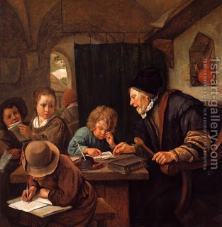

Zevachim 48 - Why Do Most Holy Sacrifices Require North?
Following most holy sacrifices require slaughter in the northern side of the Courtyard: the bull and he-goat of Yom Kippur; the communal offerings of bull and goat that are completely burnt; the communal and the private sin-offerings; the burnt offering; and the communal peace- and guilt-offerings.
The Torah mentioned the north requirement in connection with the burnt offering. Why did the teacher not list this first? Because this requirement for the sin-offering was derived using the rules of Torah exposition, and as such, it was more beloved to him. The teacher used it to sharpen the minds of his students.
What is this derivation? " In the place where the burnt offering is slaughtered shall the sin-offering be slaughtered ."
Art: Jan Steen - The Severe Teacher